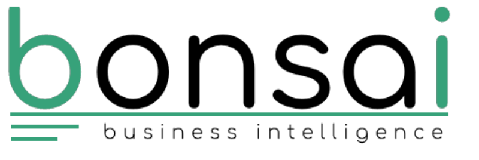
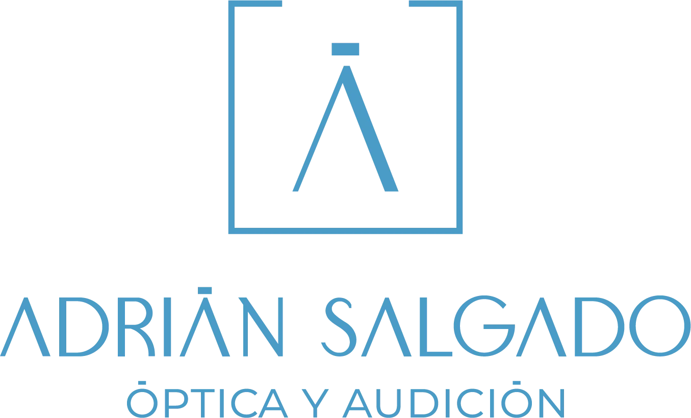
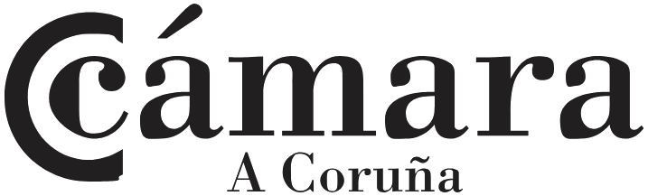
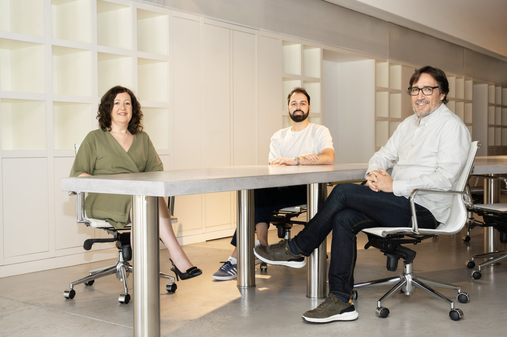

¿Hablamos?Una empresa de business intelligence ayuda a otras a usar su información para tomar mejores decisiones: entiende el negocio, domina los datos y sabe conectar ambas cosas.
El problema casi siempre es el mismo. Conoces bien tu negocio, pero a la hora de la verdad la información no está lista. Hay reuniones de dirección donde se decide con lo que alguien ha podido preparar esa semana, y cuando los números llegan ya es tarde para actuar.
Las herramientas de BI llevan años en el mercado y muchas organizaciones ya tienen acceso a alguna, a veces sin saberlo porque viene incluida en lo que ya pagan. Lo que más ayuda es entender antes el proceso: qué información se genera, dónde se pierde, quién la necesita y cuándo.
Una empresa de business intelligence entrega la certeza de saber, cada mañana, qué está pasando en el negocio y dónde hay que actuar.
Un proveedor de software resuelve la instalación y la licencia. Una empresa BI empieza antes: por entender cómo se mueve (o se atasca) la información dentro de la organización, y qué falta para que llegue a quien la necesita.
La herramienta llega después. Y muchas veces se puede trabajar con lo que ya tenéis (el ERP, el Excel, el Microsoft 365 de turno): suele haber más de lo que parece, solo que sin conectar.
A veces cuesta verlo, pero hay señales que lo cuentan.
Si te identificas con dos o más, la clave está en que la información llegue cuando toca. Y tiene solución.
Cuéntanos cómo trabajáis hoy y lo vemos juntos.
Pide tu primera reunión→Cada proyecto es distinto, y el punto de partida es el mismo: entender el problema antes de proponer nada. Cuando construimos nuestras soluciones, pasamos por distintos caminos que pueden ser, entre otros:
Antes de abrir el ordenador, nos sentamos a escucharte: cómo trabaja tu equipo, qué información manejáis y dónde os gustaría llegar. Desde ahí construimos una solución que encaje con vuestra forma de trabajar.
Resolvemos el problema concreto que tienes delante, apoyándonos en lo que hemos aprendido en proyectos anteriores de sectores y equipos distintos.
Trabajamos sin comisiones por licencias, así que recomendamos el software que encaja contigo. Usamos muchas herramientas distintas y, siempre que se puede, aprovechamos lo que ya tienes funcionando.
Nuestro trabajo es entender tu proceso y traducirlo nosotros mismos a una herramienta, sin que tengas que aprender términos técnicos para que el proyecto avance.
Lo que resuelve un problema de márgenes en distribución puede aplicarse en logística.
La persona que entiende tu problema es la misma que diseña la solución. Si algo necesita ajuste después de la implantación, hablas con quien la construyó.
Entender el negocio y entender la tecnología no siempre van juntos. En Bonsai BI sí hablamos los dos idiomas: el mismo equipo que diagnostica las lagunas de tu proceso es el que las resuelve y el que responde después.
Se me da bien encontrar la unión, desgranar el paso a paso… y encontrar el camino. Soy mujer de equipo. En Bonsai BI eso se traduce en construir, acompañar y ser la red de apoyo de nuestros clientes para llegar a destino juntos y en la mejor posición.
Lo que me produce verdadera satisfacción es superar el reto de conseguir una configuración del Sistema de Información de mis clientes, sea cual sea ese S.I, que les ayude a alcanzar esa certeza que se transmite cuando al terminar un proyecto me dicen, "ahora sí, con esto veo y sé".
La herramienta es lo que se ve, pero lo que de verdad marca la diferencia es todo el trabajo previo: entender el proceso del cliente, detectar dónde está el valor real y acompañar el cambio para que se adopte sin fricción.
Disfruto dándole vueltas a los problemas hasta que lo tedioso se vuelva intrascendente, lo difícil resulte sencillo y que el caos encuentre su orden.
Soy un joven desarrollador de software con ganas de resolver problemas reales. Una de mis mayores pasiones desde pequeño fue solucionar problemas y simplificar tareas cotidianas.
En un equipo enfocado en datos y tecnología, mi papel es ponerle el toque humano y cercano: contar historias, construir presencia digital y transformar lo complejo en contenidos claros y con propósito.
Los datos son universales, y cada sector tiene sus propias métricas, sistemas y presiones competitivas. Por eso trabajamos con un enfoque sectorial desde el primer día.
Trabajamos con varias herramientas, porque cada empresa necesita la suya. La elección depende de tu stack tecnológico, tu equipo y el tipo de análisis que necesitas.
Son las plataformas líderes según el Gartner Magic Quadrant for Analytics and Business Intelligence Platforms.
La herramienta puede ser la que ya tienes: nos adaptamos a tu sistema. Si hace falta otra, la elegimos contigo.
Cada proyecto es distinto, y el método es el mismo.
Antes de hablar de soluciones, entendemos el problema. Qué decisiones tomas hoy sin la información que necesitas. Qué datos tienes y dónde están.
Auditamos tus fuentes de datos, su calidad y su conectividad. El diagnóstico tiene valor por sí solo. Incluso si decides seguir por tu cuenta, saldrás de esa fase sabiendo en qué estado están tus datos.
Saber más sobre el diagnóstico →Con el diagnóstico en la mano diseñamos la arquitectura de datos y la solución BI que mejor responde a tus necesidades. Con alcance, tecnología y plazos definidos.
Ejecutamos el proyecto acompañándote en cada paso. Formamos a las personas que van a usar la herramienta para que la adopten desde el primer día.
El negocio cambia y los datos también. Ofrecemos soporte continuo y revisiones periódicas para que tu solución BI siga siendo útil dentro de un año.
El primer paso es una conversación, y es gratuita.
Pide tu primera reunión→Cada empresa trabaja a su manera. Estas son las diferencias en cómo trabajamos en Bonsai BI y en lo que puedes esperar de cada opción.
Si quieres comparar con tu caso concreto, empecemos por una reunión.
Pide tu primera reunión→

Ayuda a otras organizaciones a convertir sus datos en información útil para tomar decisiones. En Bonsai BI empezamos por entender cómo trabaja tu empresa y cómo fluye su información, y después construimos lo que necesita: cuadros de mando e integración de datos, aplicaciones de registro, automatización o formación.
Una consultora tecnológica suele partir de los sistemas y la infraestructura. Nosotros partimos de tu negocio y seguimos siempre el mismo orden: procesos primero, datos después, tecnología al final.
Depende de la solución y del alcance del proyecto, y se ajusta a cada caso. Hablamos de tu caso y te presupuestamos lo que necesita.
Depende de la complejidad de tus procesos, de lo depurados y digitalizados que estén tus datos y de cuánta gente participa. En la primera llamada te damos una estimación para tu caso.
Trabajamos con Power BI, Tableau, Qlik Sense y Looker, entre otras, y también sobre las herramientas que ya usas. La elegimos contigo en función de tu equipo y de lo que necesitas analizar.
Puedes empezar tal como estás. Muchas empresas llegan porque su información está repartida entre varios sitios. Empezamos viendo cómo fluye y dónde se escapa tiempo, margen o datos, y desde ahí vamos ordenándolo.
Trabajamos con ONGs y tercer sector, ingeniería y construcción, comercio y retail, instaladores industriales, distribución, logística y transporte, y áreas transversales como la integración con tu ERP.
Formamos a tu equipo para que, cuando tu negocio cambie, sea tu gente quien adapte la solución con autonomía.
Sí. Revisamos lo que tienes, vemos qué falla y proponemos qué mejorar. A veces la propuesta es un cambio de proceso o de organización de tu equipo.
Con una llamada inicial gratuita, para confirmar contigo si necesitas un diagnóstico o si ya tienes un problema concreto sobre el que trabajar.

Tu información ya está ahí: en cada venta, cada proceso, cada sistema que usas a diario. Lo que suele faltar es que llegue a quien tiene que decidir, en el momento en que hace falta.
La primera reunión es gratuita. Cuéntanos qué no está funcionando como debería y te decimos si podemos ayudarte y cómo.
Pide tu reunión ahora→